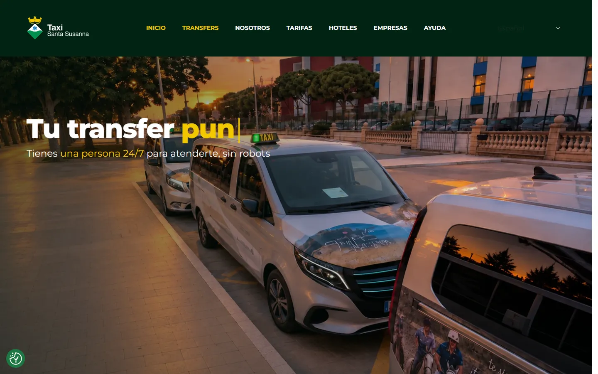
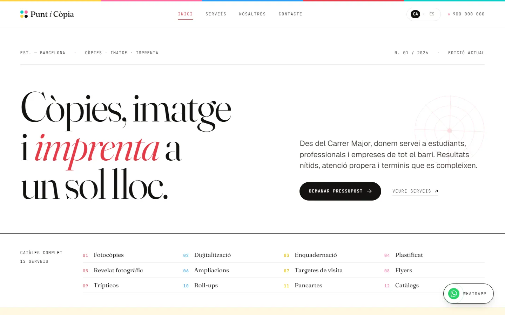

A · Esencial
Plan Esencial
190 €/mes + IVA
La base del SEO local: ficha de Google y reseñas.
- Ficha de Google al día
- Gestión de reseñas
- 1 publicación/semana
SEO local
Para aparecer cuando alguien busca tu servicio cerca y ya está listo para llamarte o visitarte.
Desde 190 €/mes · Sin permanencia · Primera valoración gratis
Cuando alguien busca «fisio cerca de mí» o «electricista en Sabadell» ya sabe lo que quiere. Solo necesita encontrarte a ti. El SEO local consiste en aparecer en ese momento: en la ficha de Google, en el mapa y en los primeros resultados de tu zona.
Optimización y actualización continua de tu Google Business Profile.
Estrategia para conseguir más reseñas y respuesta a todas ellas.
Datos estructurados, velocidad y señales de confianza para Google.
Páginas y textos optimizados para tu servicio y tu zona.
Alta y actualización en los directorios que Google tiene en cuenta.
Posición, llamadas, visitas y acciones del mes siguiente.
Sin permanencia. Cancelas con un mes de aviso.
A · Esencial
190 €/mes + IVA
La base del SEO local: ficha de Google y reseñas.
B · Recomendado
490 €/mes + IVA
Ficha + contenido local + directorios.
C · Premium
690 €/mes + IVA
Para varios servicios o zonas geográficas.
Para empezar · pago único Auditoría y puesta a punto de tu presencia local por 290 € + IVA. Ideal si quieres empezar bien antes del plan mensual.
Me interesa la auditoría
Transporte
Reservas online y SEO local en el Maresme.

Peluquería · Proyecto demo
Web y reservas online para peluquería.

Copistería · Proyecto demo
Bilingüe, con 12 servicios y presupuesto en un mensaje.
Resultados progresivos desde el primer mes.
Estado de tu presencia local y oportunidades.
Ficha de Google, web y directorios optimizados.
Contenido local, reseñas y señales de confianza.
Más servicios, más zonas o más páginas locales.
En remoto a toda Cataluña, con conocimiento del tejido comercial local.
Los primeros cambios en la ficha de Google se ven en 2–4 semanas. El posicionamiento local mejora de forma progresiva durante los primeros 3–4 meses.
No. Puedes cancelar con un mes de preaviso.
Sí. La ficha de Google Business Profile funciona sola. Si quieres más resultados, una web sencilla multiplica el efecto.
No te lo garantiza nadie, y desconfía de quien lo haga. Lo que sí puedo decirte es que aplico las mismas técnicas que han funcionado en los negocios locales con los que he trabajado.
El SEO local te posiciona en búsquedas con intención geográfica — «fisio cerca de mí», «electricista en Sabadell». El SEO general busca términos sin localización. Para negocios locales, el primero es mucho más rentable.
Posición en los resultados locales, visitas y llamadas desde la ficha, reseñas gestionadas y acciones del mes siguiente.
Primera valoración gratis
Te valoro tu ficha de Google gratis.
Barcelona · en remoto a todas partes